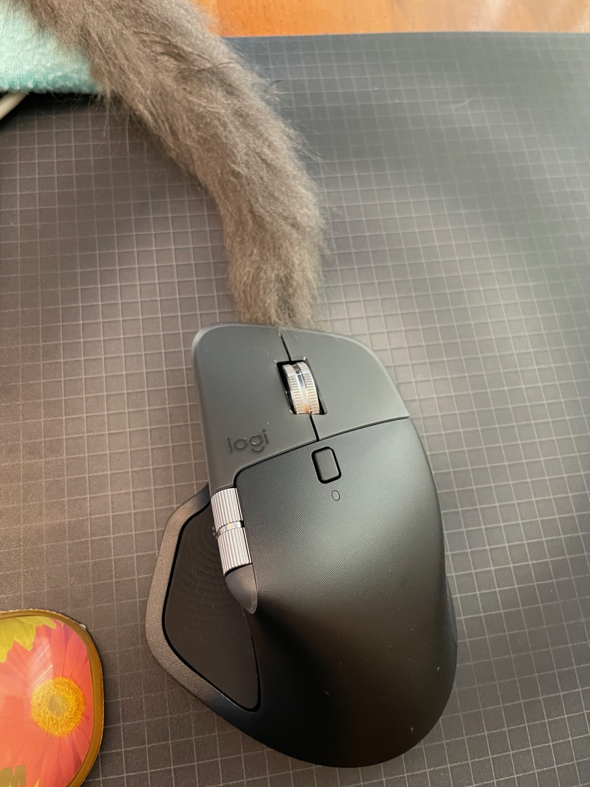
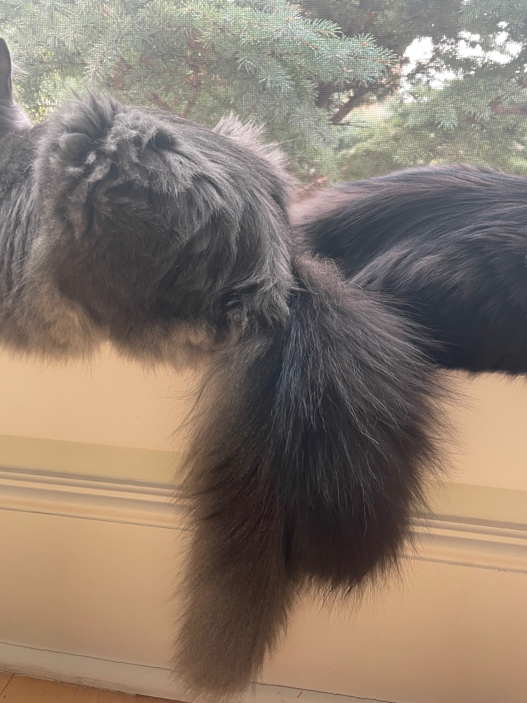
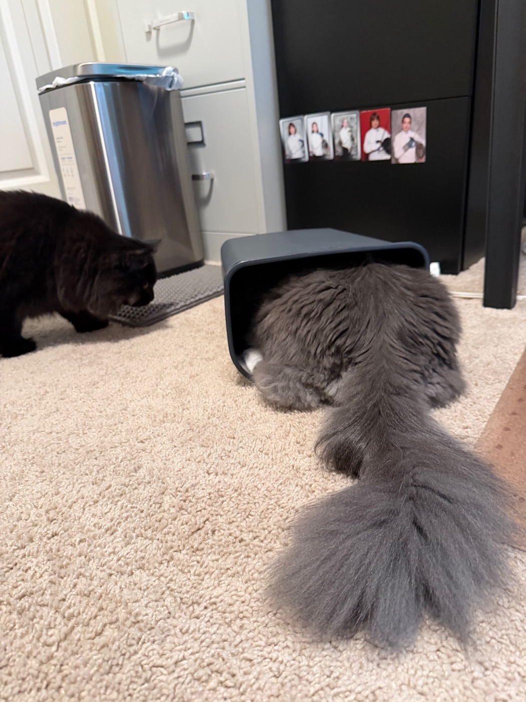

Entropy's tail started out as a cord. It has more than doubled since, in length and in girth, and now qualifies as furniture. Three photographs across five months caught it at each stage.
February, not quite four months old: the tail is more rope than plume, tapering to a point, and the point lands exactly where a mouse's cable would come out. At a glance the desk still has its wired mouse, working remarkably well. It does not. The mouse is wireless, the replacement for the one whose cable Entropy chewed through. The only cord in the photograph is his.

By April there is volume — fur standing off the tailbone instead of lying along it. It turns up on a windowsill tangled with Zeta's. Both cats are facing out through the screen at the junipers in the front bed, which are also larger than they were meant to be. Neither acknowledges the arrangement below.

June is the before-and-after. The tail alone is now nearly as wide as the rest of him. The rest of him is in a trash can that gave up being a trash can some time ago. It is a cat toy conveyor now, usually empty, occasionally not. Both kittens were interested in the toy. Entropy's approach was the more enthusiastic. Zeta's, visible at left, was more measured. The toy may still be in there.

Same cat, same tail, five months on. The rest of him grew too. The tail is what shows it.